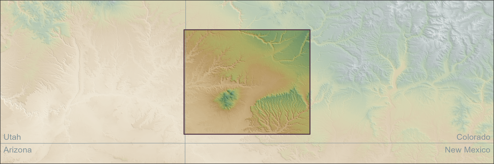

Estimate a regional chronology \(p(t)\) that effectively summarizes the individual chronologies \(p_i(t)\) of all sites \(s_i\) in a region of interest.
But Why a Chronology?
Because climate and population are the levers of human history!
And Why Indirect Dating?
Because direct dates are expensive and often destructive .
OK, So Why Not Aoristic Sums?
Because (1) date ranges are never tested and (2) site chronologies are assumed to be independent.
An AI Alternative
We can estimate a regional chronology conditioned on some data \(x\) using a Mixture Density Network:
Comprehensive: can estimate site and regional chronologies simultaneously.
Flexible: can (i) train on any inputs, even images! and (ii) model any outputs or direct dates, notably radiocarbon and tree ring dates.
Probabilistic: can quantify our uncertainty.
Smart: can represent complex multi-modal distributions.
Still A Gaggle of Challenges
Aligning data sets across sites
Accommodating variable site sizes
Addressing inconsistent site definitions
Coping Strategy
Intuition: We want to loosen the requirement of direct association and look instead at the wider context.
Spatial Aggregates
For \(q\) direct dates, \(r\) sites with recorded artifacts, and \(m\) artifact types, define aggregate \(q \times m\) artifact matrix \(\boldsymbol{A}\) as:
\[
\boldsymbol{A} = \boldsymbol{WF}
\]
where
\(\boldsymbol{W}\) is a \(q \times r\) spatial weight matrix
\(\boldsymbol{F}\) is a disaggregate \(r \times m\) artifact matrix
Intuition:\(\boldsymbol{A}\) tells us how much stuff is around each direct date.
Spatial Basis Functions
For a regular grid of \(p\) knots, define a \(q \times p\) spatial process matrix \(\boldsymbol{B}\) as:
\[
\boldsymbol{B} = (b(i,j))
\]
where
\(b(i, j)\) is a spatial basis function that accounts for the distance between direct date \(i \in 1,...,q\) and spatial knot \(j \in 1, ..., p\)
Intuition:\(\boldsymbol{B}\) tells us how direct dates are related in space.
Model Graph
Test Case: Central Mesa Verde

Diagnostics
Regional Chronology
Overspecified with \(K = 128\) mixture components
Site Chronologies
Tree Ring Dates
More Site Chronologies
Tree Ring Dates
These sites are right next to each other.
What Next?
Reduce over-fitting .
Account for durations , not just construction dates.
Correlate spatial and temporal proximity in a more realistic way.
![]()